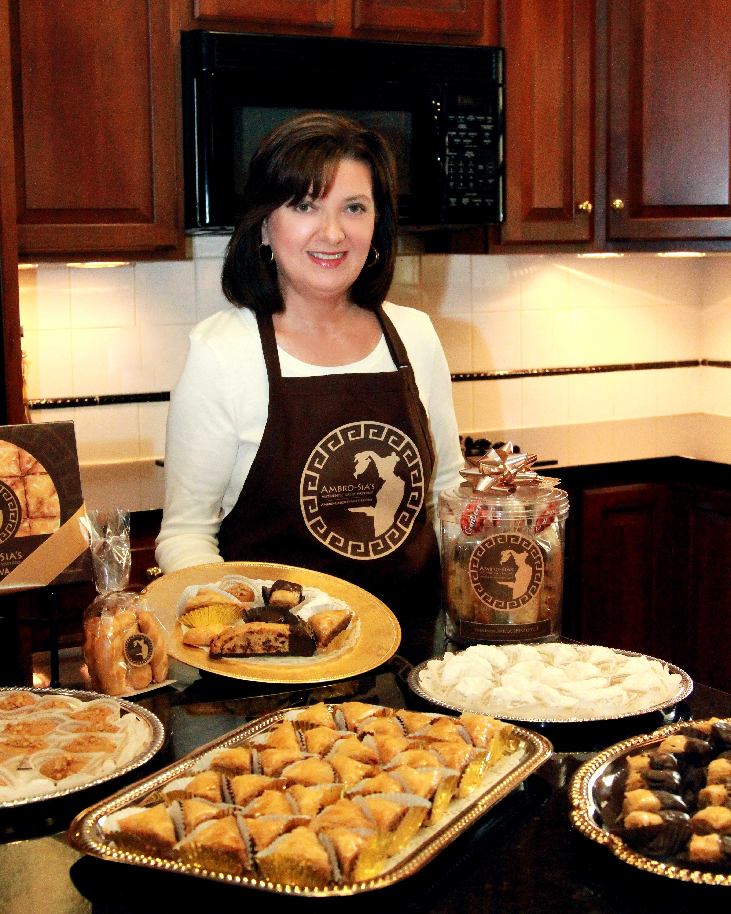

<div class="row">
    <div class="col-sm-12">
        <h1 class="text-darker">All About Ambro-Sias</h1>
        <div class="text-md-lg text-white text-justify">
            <div style="float: left;" class="col-md-4">
                
            </div>
            
            <p>I was born and raised in, Karpenission, Evrytanias, Greece, and I learned at a very young age how to properly prepare and bake cookies and pastries at home with my mother and sister.  In Greece, good food and pastries are more than basic sustenance; instead, Greek food turns any ordinary event into a memorable occasion and is always enjoyed with family and friends.</p>
            <p>After immigrating to the United States, I graduated from The Ohio State University and continued a professional teaching career for over thirty-three years.  Over the years, I continued to bake for my family and friends during the holidays and especially for their special occasions, such as: anniversaries, birthdays, christenings, graduations, parties, and weddings.  During my professional teaching career, I always reminded and encouraged my students, “Practice makes perfect!”  I have applied this same principle to my baking, along with my secret ingredient (my passion for baking), and I perfected my recipes that have been passed down through my family for generations.</p>
            <p>Upon retirement I began to receive even more inquiries for my traditional Greek cookies and pastries. After each event, guests have complimented me so often about the taste, flavor, and texture of the delightful and delectable pastries they had enjoyed, and many told me that my pastries tasted just like the ones made by their grandmothers.  After having received so many compliments from my satisfied friends, colleagues, and other customers, I decided to develop my hobby and passion for baking by creating Ambro-Sia’s Greek Pastries, LLC.</p>
            <p>
                Ambro-Sia’s offers the most frequently requested traditional desserts that are usually only found in the finest pastry shops in Greece, but they are available right here for your special occasion.  My specialties include: baklava, melomakarona, kourambiedes, paximadia ("Greek biscotti", my own personal creation), and koulourakia.  I also offer a catering menu with additional items. To maintain the highest quality, I absolutely use only the finest ingredients without substitutes or shortcuts (because there is no shortcut to excellence).  I make my pastries just the way my mother taught me.
            </p>

            <p>Thank you for taking a moment to browse through my website, and you will see a variety of tasty and delicious pastries offered in beautiful packaging to be given as a special treat to yourself, your family, or as a gift. I will occasionally add exclusive new items so check back often!</p>

            <p>My biggest reward, your selection!!!</p>

            <p>Thank you.</p>

            <h2 style="font-family: serif;"><em>Sia</em></h2>

        </div>
    </div>
</div>
